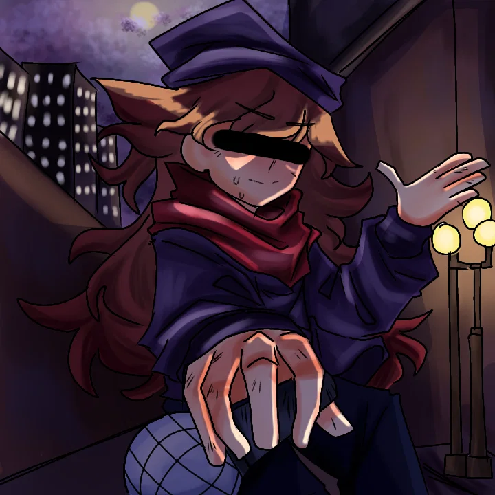
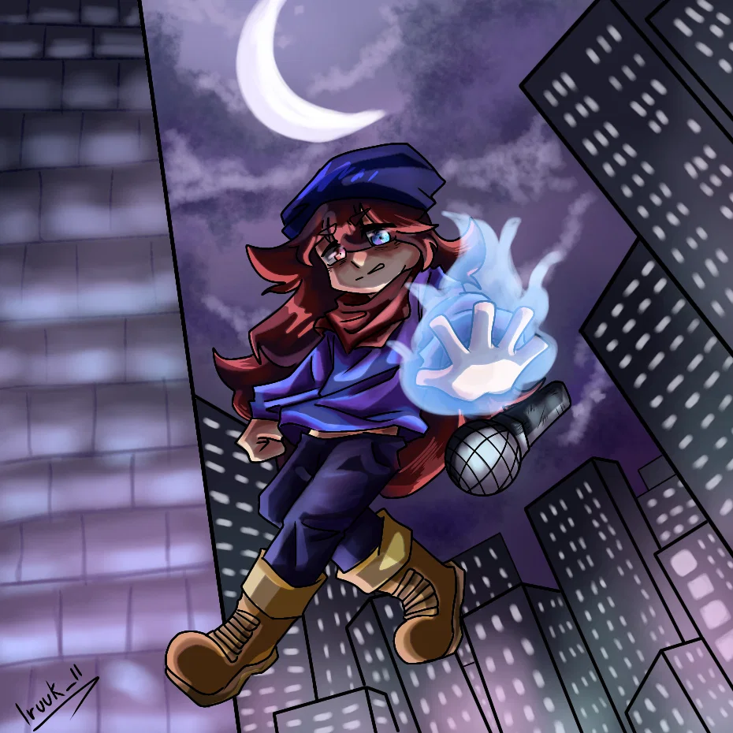

ARCHIVO REPRODUCIBLE
Sunsenet
Versión conservada · 1:55 · crédito musical no indicado.
Una ruta pacifista y extraña donde BF y GF descubren la leyenda de la rosa mientras Kamer intenta proteger su identidad y regresar antes de que termine el escudo temporal.
BF choca con Kamer al salir de una tienda. GF relaciona su presencia con la leyenda de la rosa y BF exige una batalla.
Versión conservada · 1:55 · crédito musical no indicado.

GF presiona a Kamer con información sobre la rosa. Él responde porque protegerla tiene prioridad sobre cualquier encuentro casual.
Archivo de audio conservado · 1:53 · crédito pendiente.

La nota también la llama “Mentira de Karmas” o “Karma de Mentiras”. El único audio entregado para este punto se llama Tempestad.mp3; la relación definitiva entre ambos nombres no está confirmada.
Boceto de 0:27. Se conserva el nombre real del archivo para no inventar su identidad.
Cuando Kamer intenta atraparlos, enredaderas de rosa lo absorben bajo el suelo. BF y GF quedan confundidos y la ruta termina sin explicar a dónde fue llevado.